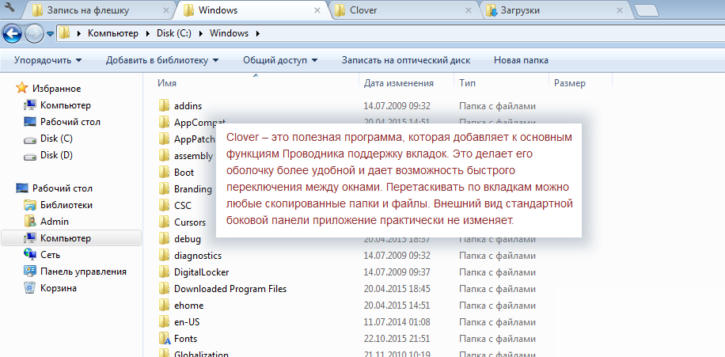

http://www.bestfree.ru/soft/file/explorer.php
rutracker.org/forum/viewtopic.php?t=5264332
Clover 3.2.5 / 3.0.406 RePack
Идеальная версия для Windows 7 - 3.0.406 Начиная с версии 3.1.1 - код программы был полностью переписан под адаптацию win 10, после чего некоторые функции (фишки) перестали работать.
Год/Дата Выпуска: 12.2016 Версия: 3.2.5 / 3.0.406 Разработчик: EJIE Technology (Китай) Сайт разработчика: http://ejie.me/ RePack by OvArt
Разрядность: 32bit, 64bit Язык интерфейса: Английский + Русский Таблэтка: Не требуется Системные требования: Windows XP/Vista/7/8/8.1/10 Описание: Clover (Клевер) - расширение функций проводника Windows. После установки программы, в проводнике появится функция вкладок как у браузера Google Chrome. С помощью них можно быстро переключатся между открытыми окнами (вкладками).
Основные функции: добавление к Проводнику вкладок и панели закладок, в которых можно размещать любые папки; создание закладок для часто используемых каталогов; поддержка перемещения папок и файлов между вкладками; создание, дублирование, перемещение и закрепление вкладок; вынесение за пределы окна; открытие папки в новой вкладке путем перетаскивания на панель или через контекстное меню; поддержка панели закладок для упрощения работы с файлами.
Горячие клавиши в проводнике: Ctrl + N Откройте новое окно Clover. Ctrl + T Откройте новую вкладку. Ctrl + W Закрыть текущая вкладка. Ctrl + Shift + T Снова откройте последнюю закрытую вкладку. Ctrl + D Закладка текущей папке (Удалить файл или папку, если выбрано). Ctrl + Shift + D Поместите все открытые вкладки в папку закладка. Ctrl + Tab Переключитесь на следующую вкладку. Ctrl + Shift + Tab Переключитесь на предыдущую вкладку. Ctrl + Shift + B Включить или отключить закладки бар.
Управление мышкой (фишки): перетащить папку из любого места на панель вкладок - папка откроется в новой вкладке щелкните средней кнопкой мыши (кнопка в колесе мыши) по папке из любого места - папка откроется в новой вкладке щелкните средней кнопкой мыши (кнопка в колесе мыши) по открытой вкладке - вкладка закроется щелкните средней кнопкой мыши (кнопка в колесе мыши) по в адресной строке по любому звену - папка откроется в новой вкладке потяните за вкладку вниз и отпустите - откроется папка в отдельной окне / группе вкладок (в копии кловера)
Изменение темы (внешнего вида) проводника только для версии 3.0.406: Выберите тему браузера Google Chrome из Chrome Web Store https://chrome.google.com/webstore/category/themes?hl=ru Для скачивания темы (или любого расширения) Google Chrome используем сайт http://chrome-extension-downloader.com/ - В окно Insert the web store url: вставьте url ссылку темы Chrome Web Store и получите ссылку на скачивание темы Выберите скаченную тему вида Aero-colored-default-theme_v1.0.3.crx в настройках Кловера.
Особенности Репака: установка в один клик изменена иконка папки с клевера на простую желтую папку! настройка: скрыта панель закладок для 3.0.406 - установлена тема Aero-colored-default-theme_v1.0.3.crx (выбрал из сотен!), которая выглядит как родной проводник (незаметная) на рабочем столе появляется Uninstall Clover.exe, если не понравится в один клик удалите